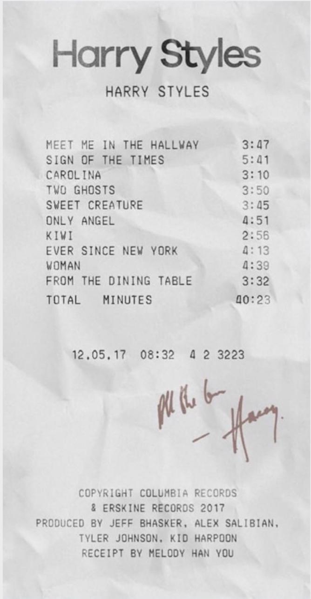
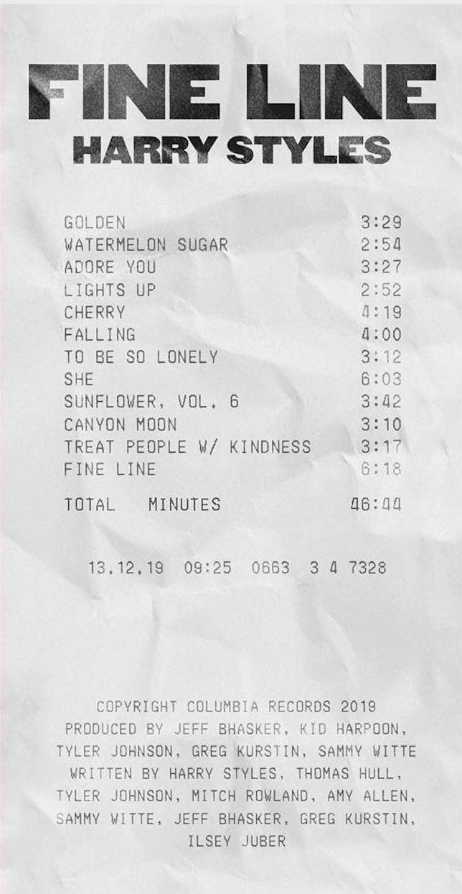

With Harrys two album releases the fans have deffinintly picked their favorites too. Here are the top ten fan favorites. 10. Lights up 9. She 8. Sweet Creature 7. Kiwi 6. Fine Line 5. Sign of the Times 4. Golden 3. Adore You 2. Falling 1. Watermelon Sugar. Considering 8/10 songs were from his most recent album "Fine Line" we can assume that many fans are very pleased with Harrys new way of music.
Lets talk more about Watermelon Sugar, its sucseess and the story behind it. Harry originally wrote Watermelon Sugar while on tour "Live On Tour". Harry has admitted that it was the hardest song he has ever written because it took him around a year to finish it. He kept rewritting it but could not figure out an ending that he was pleased with and even revealed that he kept taking it in an out of the album because he was so unsure of it. Even after almost three years of the song being released, the song places 20th of the US Billboard Hot 100, 33rd on S Adult Contemporary Billboard, 11th on US Adult Top 40 Billboard, 11th on US Dance/Mix Show Airplay Billboardin the US alone, and has over one billion streams on Spotify alone.
